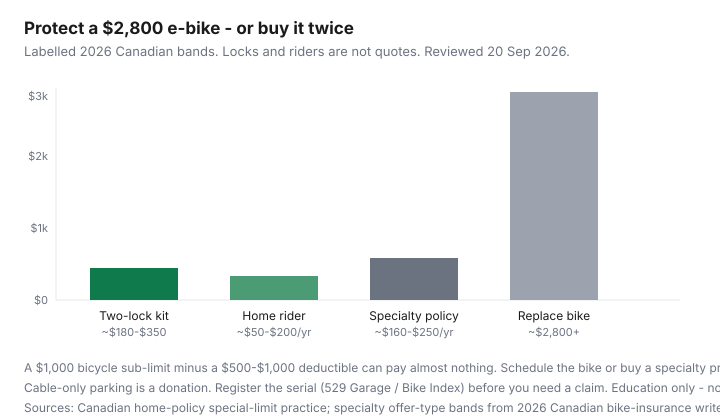

Transportation · Canada
How to protect an e-bike investment in Canada: locks, registration, and insurance
Canadians finance a $2,000–$4,000 commuter, then park it on a $40 cable in a condo cage and assume “home insurance will sort it.” Bicycle sub-limits on many tenant and home policies sit at $1,000–$3,000 — and a $500–$1,000 deductible can erase the claim. E-bike theft risk is not the same as a $250 acoustic bike. This is a protection stack: lock, habit, registration, then a rider or specialty policy that actually names the serial.
Break-even versus a pass is e-bike vs Compass / PRESTO / Opus. If the alternative is a whole car, use car-lite city numbers. Federal EVAP still does not cover two-wheelers.
Disclosure: Quality lock retailers and bike-insurance offer types (home riders, specialty bicycle policies) may appear as partner links later. Saving Optimizer may earn a commission if we add them. We do not currently claim retailer or insurer partnerships. This is comparison education, not a broker quote or a claim decision.
Key takeaways
- Budget two locks that a thief needs tools for — a Sold Secure Gold / ART-style U-lock plus a chain or second shackle through the rear wheel — not a cable. Add-on kit: roughly $180–$350.
- Photograph the serial, register it (Project 529 Garage where police use it, plus Bike Index), and keep the receipt and a battery photo. Claims die on “prove you owned it.”
- Ask a licensed broker whether the bike is under a special limit. A $1,000 bicycle cap minus a $1,000 deductible is not coverage. Schedule the e-bike or price a specialty product (~$160–$250/year in 2026 Canadian write-ups for mid-value bikes).
- Unattended overnight outside is the exclusion people discover after the fact. Indoor charging is a fire-and-bylaw conversation, not a vibe.
- Protection that costs $300–$500 in year one is cheaper than replacing a $2,800 bike. Theft resets the transit-pass break-even.
Why e-bike theft risk is different from cheap acoustic bikes
Thieves prefer energy density they can sell. A mid commuter with a removable battery is a $2,400–$3,500 object that fits in a van. Acoustic bikes at $250 are still stolen; they are not a financing event. Three differences change the math:
- Resale: frames and packs move on Marketplace the same week. Serials get ignored unless you registered them first.
- Parking time: commuters sit at stations and cages for eight hours. That is the window, not a coffee stop.
- Insurance mismatch: policies written when you owned a $400 hybrid still have 2019 bicycle limits.
If the bike is not a legal power-assisted bicycle (Ontario: 500 W / 32 km/h with the bilingual label; similar provincial PAB rules elsewhere), some insurers treat it as a motor vehicle. That is a licensed-broker question, not a forum thread.
Lock tiers and parking habits that reduce loss
| Tier | What it is | 2026 band | Use |
|---|---|---|---|
| Skip | Cable, chain “alarm,” cheap folding lock | $20–$60 | Donation. Do not insure a bike you park this way. |
| Minimum street | Rated U-lock through frame and a fixed rack | $80–$160 | Daytime errands you can see. |
| Commute stack | U-lock + chain or second shackle; wheel and battery locked | $180–$350 | Station, cage, or any eight-hour sit. |
Habits that cost $0: lock to something immovable (not a sign a van can lift), fill the shackle, take the battery inside if it is designed to come out, and do not advertise the bike on a ground-floor rack overnight. Folding e-bikes solve some SkyTrain and condo rules — they do not solve a hallway that is a fire exit.
Registration and tracking tools
- Project 529 Garage: used by several Canadian police services (Vancouver, Calgary, Edmonton among the names that show up in 2026 rider write-ups). Free. Do it before the theft.
- Bike Index and manufacturer registries: a second public record. Photograph the serial on the frame and the motor.
- Trackers: Apple Find My / Tile-style devices help recovery; they are not insurance and they are not a lock. Hide them. Tell the broker if a claim depends on “we know where it is.”
Registration does not stop a theft. It turns a “maybe they find it” story into a police file a claims adjuster can read.
Home insurance riders vs specialty bike policies — questions to ask
Two offer types, not a product pick:
- What is the special limit for bicycles or e-bikes, and does a power-assisted bicycle sit in that limit?
- Can we schedule this serial for replacement cost? What is the extra premium?
- What is the deductible versus the bike’s value? A $1,000 deductible on a $2,200 bike is a coin flip.
- Is theft unattended / overnight / off-premises excluded or limited?
- Does personal liability follow you on the road, or only contents in the unit?
- If the motor exceeds provincial PAB rules, do you need a different product?
2026 Canadian specialty write-ups cite roughly $14/month entry products for $2,000–$5,000 bikes, or about $160–$200/year on named bicycle policies. Treat those as offer-type bands. U.S. brands that “cover rides in Canada” often sell only to U.S. residents — residency is the gate.

What documentation claims need
- Original invoice or a dated transfer, serial photo, and a current photo of the bike.
- Police report number. File it the day you notice the gap, not after you “waited to see.”
- Proof of how it was locked and where (cage camera request, lock remnants). “It was in the locker” is not a sentence.
- Registration printout and any tracker logs.
If you financed the bike, the lender may still want to be paid. That is why under-locking a financed e-bike is a second loan, not a lifestyle choice.
Cost of protection vs replacing a $2,000+ bike
Worked example (labelled): $2,800 all-in commuter from the transit break-even guide. Two-lock kit $250. Scheduled rider $120/year (illustrative). Specialty policy $180/year (illustrative). Five-year protection ≈ $250 + $600–$900. One theft without a useful payout is $2,800 plus the months you buy Compass or PRESTO again. Protection wins unless you park like the bike is disposable.
Condo storage negotiations
Ask the board, in writing, where an e-bike may live and charge. Many cages are theft galleries with shared keys. In-unit storage is a fire, hallway, and insurance conversation — follow the building rules and the manufacturer’s charging instructions. Lithium packs do not belong on a wooden shelf next to a dryer lint trap. If the corporation bans charging in the unit, the “cheap e-bike commute” just grew a locker-and-politics line. Visitor-bike rules are how guests’ bikes disappear; that is not your claim.
Broker script, 20 Sep 2026: “I own a power-assisted bicycle, serial X, value $Y, stored [in-unit / cage]. What is the bicycle special limit, the deductible, and the cost to schedule it? Are overnight off-premises thefts covered?” Write the answers down. Then decide if a specialty product is cheaper than hope.
Sources & date stamps
- Companion e-bike vs transit guide — $1,500–$3,500 commuter bands; EVAP excludes e-bikes (20 Sep 2026).
- Canadian home/tenant special-limit practice for bicycles (broker-education write-ups, 2026); specialty offer-type bands from Canadian e-bike insurance explainers — confirm a live quote.
- Project 529 Garage / Bike Index as registration tools used by Canadian riders and some police services.
- Provincial PAB definitions (e.g. Ontario power-assisted bicycle rules) — classification can change which policy applies.
Frequently asked questions
Does home insurance automatically cover a $3,000 e-bike in Canada?
Often only up to a bicycle special limit, and only after the deductible. Ask whether the bike is scheduled. A $1,000 cap minus a $1,000 deductible is not coverage.
Is e-bike insurance mandatory in Canada?
Not for a legal power-assisted bicycle in typical provincial rules. If the motor or speed exceeds PAB limits, some insurers treat it as a motor vehicle. Ask a licensed broker. This is not a coverage opinion.
What lock is enough for a Canadian commute?
A rated U-lock through the frame and a second lock on the rear wheel, on an immovable rack, with the battery indoors if it removes. Cables are for luggage, not e-bikes.
Should I register the bike before it is stolen?
Yes. 529 Garage and Bike Index are free. Photograph the serial and keep the receipt. Claims and recovery both start with proof you owned that frame.
Can I charge an e-bike in a condo locker?
Only if the corporation and the manufacturer allow it. Many cages are theft-prone; in-unit charging is a fire-code conversation. Get the rule in writing before you buy the bike.